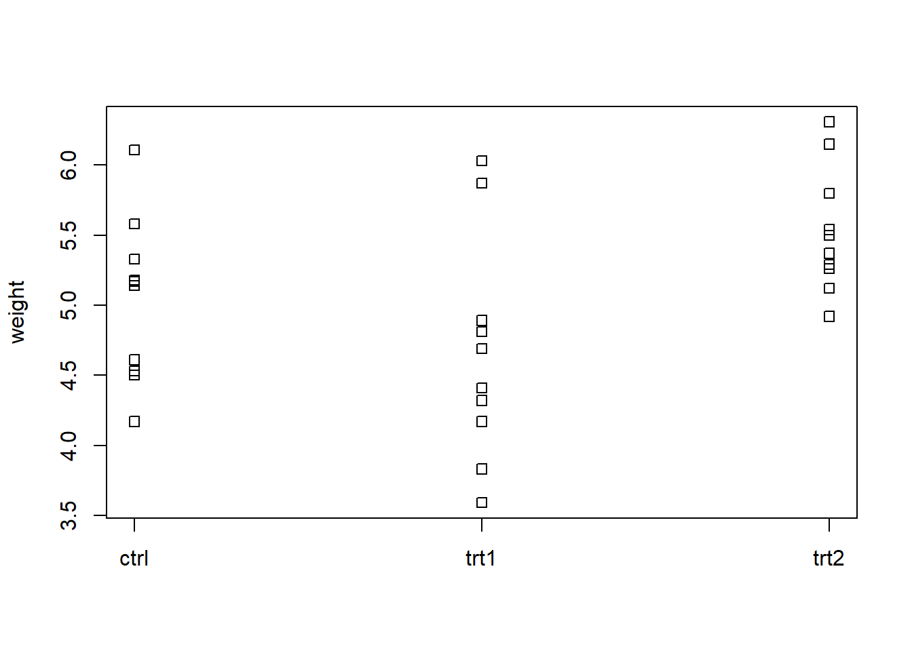

Chapter 25 ANOVA
Load data sets of this chapter
data("meat", package = "DataRZ")
data("snails", package = "DataRZ")
data("pine", package = "DataRZ")
data("cheddar", package = "DataRZ")
data("grasses", package = "DataRZ")
data("animals", package = "DataRZ")
data("trigly", package = "DataRZ")
data("ergoStool", package = "DataRZ")
data("Machines", package = "DataRZ")
data("cheese.data", package = "DataRZ")
data("dish", package = "DataRZ")
data("PlantGrowth")
data("Pastes", package = "lme4")
data("oats", package = "MASS")25.2 Example
fit <- aov(Yield ~ Genotype + Block, data = data)
anova(fit) #Anova table
## Analysis of Variance Table
##
## Response: Yield
## Df Sum Sq Mean Sq F value Pr(>F)
## Genotype 1 4.00 4.00 25.00 0.1257
## Block 1 1.00 1.00 6.25 0.2422
## Residuals 1 0.16 0.16
coef(fit) #Effect of different Factors
## (Intercept) Genotype2 Blockb
## 6.5 -2.0 -1.0
predict(fit) #Predict the fixed effect
## 1 2 3 4
## 6.5 5.5 4.5 3.5
residuals(fit) #Actual yield - predicted fixed effect
## 1 2 3 4
## -0.2 0.2 0.2 -0.2
par(mfrow = c(2,2))
plot(fit)25.3 Simulate data
rep()seq()rnorm()factor()gl()expand.grid()Cross productcombn()interaction()dput()if you have data set and want to generate it from code
## rep() with arguments times, each, length.out
rep(1:2, times = 2)
## [1] 1 2 1 2
rep(1:2, each = 2)
## [1] 1 1 2 2
rep(1:2, length.out = 5)
## [1] 1 2 1 2 1
## gl() is a shortcut for factor(rep())
gl(2,3, labels = c("Control", "Treat"))
## [1] Control Control Control Treat Treat Treat
## Levels: Control Treat
factor(rep(c("Control", "Treat"), each = 3)) # same output
## [1] Control Control Control Treat Treat Treat
## Levels: Control Treat
## expand.grid() and interaction()
(df <- expand.grid(Block = LETTERS[1:2], Treat = 1:3))
## Block Treat
## 1 A 1
## 2 B 1
## 3 A 2
## 4 B 2
## 5 A 3
## 6 B 3
interaction(df$Block, df$Treat)
## [1] A.1 B.1 A.2 B.2 A.3 B.3
## Levels: A.1 B.1 A.2 B.2 A.3 B.3
## combn()
combn(1:4, 2) # Combinatorics: combine each element with every other element
## [,1] [,2] [,3] [,4] [,5] [,6]
## [1,] 1 1 1 2 2 3
## [2,] 2 3 4 3 4 4
combn(1:3, 3) # Make all possible 3-fold combinations (4 choose 3 combinations)
## [,1]
## [1,] 1
## [2,] 2
## [3,] 3Simulate unbalanced data
library(tidyverse)
expand_grid(fac1 = letters[1:2],
fac2 = LETTERS[1:2]) %>%
mutate(count = c(1,2,3,1)) %>%
uncount(weights = count, .id = "rep")## # A tibble: 7 × 3
## fac1 fac2 rep
## <chr> <chr> <int>
## 1 a A 1
## 2 a B 1
## 3 a B 2
## 4 b A 1
## 5 b A 2
## 6 b A 3
## 7 b B 125.4 Visualization
25.4.1 Stripchart
stripchart(weight ~ group, vertical = TRUE, data = PlantGrowth)
library(ggplot2)
ggplot(Pastes, aes (y = cask, x = strength)) + geom_point () + facet_grid (batch ~ .)

25.5 Fit model
25.5.1 Identifiability
options("contrasts") # Default## $contrasts
## unordered ordered
## "contr.treatment" "contr.poly"- Unordered: Unordered factors (nominal scale)
- Ordered: Ordered factors (ordinal scale)
options(contrasts = c("contr.treatment", "contr.poly"))
options(contrasts = c("contr.sum", "contr.poly"))| Name | Side-constraint | Interpretation of \(\mu\) | R |
|---|---|---|---|
| weighted sum-to-zero | \[\sum_{i=1}^g n_i \alpha_i = 0\] | \[\mu = \frac{1}{N} \sum_{i=1}^g n_i \mu_i\] | |
| sum-to-zero | \[\sum_{i=1}^g \alpha_i = 0\] | \[\mu = \frac{1}{g}\sum_{i=1}^g\mu_i\] | contr.sum |
| reference group | \[\alpha_1=0\] | \[\mu=\mu_1\] | contr.treatment |
25.5.2 Fitting
# One way ANOVA
fit <- aov(weight ~ group, data = PlantGrowth)
# Two way ANOVA
fit.cheddar <- aov(acids ~ R50 + R21, data = cheddar)
# With subset of data
fit.spring <- aov(y ~ density, data = subset(snails, season == "Spring"))lm() vs aov()
aov() returns object of class aov, lm() returns object of class lm (ii) print.aov() and summary.aov() will not evaluate each factor level separately but an entire factor at once (similar to drop1())
25.6 ANOVA table
summary(fit)- ANOVA table including F-test
- Reports Type I Sum of Squares
anova(fit)- ANOVA table including F-test
- Reports Type I Sum of Squares
- identical output as
summary(fit)for objects of classaov
drop1(fit, scope = ~., test = "F")- ANOVA table including F-test
- Reports Type III Sum of Squares
- Technical issue! necessary to set
options(contrasts = c("contr.sum", "contr.sum")) - Tests in hirarchical order if scope is not set (does not test main factor if interaction is included).
scope = ~.means that each term is tested.
anova(fit, fit2)- ANOVA table which compares RSS of two nested models
25.7 Model comparison
25.8 Coefficients
coef()Levels which are shown depends on parameterization (contrast option)dummy.coef()- All levels are shown
- Coef name according to factor level name
coef(fit)
## (Intercept) grouptrt1 grouptrt2
## 5.032 -0.371 0.494
dummy.coef(fit)
## Full coefficients are
##
## (Intercept): 5.032
## group: ctrl trt1 trt2
## 0.000 -0.371 0.49425.9 Tests and CI for coeficients
summary.lm(fit)- Estimates effect \(\hat{\alpha}_i\) and p-value for each factor level
- p-values not useful because we should not drop single factor levels but entire factors (
drop1())
confint()- CI for each coefficient
summary.lm(fit)##
## Call:
## aov(formula = weight ~ group, data = PlantGrowth)
##
## Residuals:
## Min 1Q Median 3Q Max
## -1.0710 -0.4180 -0.0060 0.2627 1.3690
##
## Coefficients:
## Estimate Std. Error t value Pr(>|t|)
## (Intercept) 5.0320 0.1971 25.527 <2e-16 ***
## grouptrt1 -0.3710 0.2788 -1.331 0.1944
## grouptrt2 0.4940 0.2788 1.772 0.0877 .
## ---
## Signif. codes: 0 '***' 0.001 '**' 0.01 '*' 0.05 '.' 0.1 ' ' 1
##
## Residual standard error: 0.6234 on 27 degrees of freedom
## Multiple R-squared: 0.2641, Adjusted R-squared: 0.2096
## F-statistic: 4.846 on 2 and 27 DF, p-value: 0.01591confint(fit)## 2.5 % 97.5 %
## (Intercept) 4.62752600 5.4364740
## grouptrt1 -0.94301261 0.2010126
## grouptrt2 -0.07801261 1.066012625.10 Predict
predict(fit, newdata = data.frame(group = c("ctrl", "trt1", "trt2")))## 1 2 3
## 5.032 4.661 5.526newdata has to be a data.frame with all predictor variables in columns with the same name as the original predictor in the model (here y ~ group)
25.11 Diagnostic plots
plot(fit, which = 1) # Tukey-Anscombe plot
plot(fit, which = 2) # QQ-plot25.11.1 Simulations
Simulations can help to see if the observed pattern is far away from the assumptions. If our data is fine, the observed pattern should look similar to the simulated one (which fulfilles the assumptions).
Simulations for QQ plot
qqnorm(rnorm(nrow(df)))Simulations for Tukey-Anscombe plot
df <- PlantGrowth
df.sim <- df
set.seed(12)
par(mfrow = c(4, 5))
for(i in 1:20){
df.sim[, "y"] <- simulate(fit)
fit.sim <- update(fit, data = df.sim)
plot(fit.sim, which = 1)
}25.11.2 QQ plot in mixed models
Normal QQ plot for each random variable
fit.lme <- lmer(y ~ (1 | day) + (1 | machine) + (1 | machine:day), data = trigly)
qqnorm(ranef(fit.lme)$day[,1], main = "day")
qqnorm(ranef(fit.lme)$machine[,1], main = "machine")
qqnorm(ranef(fit.lme)$'machine:day'[,1], main = "machine:day")
qqnorm(resid(fit.lme), main = "residuals")25.12 Contrasts
library(multcomp)
## manual contrast
fit.gh <- glht(fit, linfct = mcp(group = c(1, -1/2, -1/2)))
## several manual contrasts
K <- rbind(mycontr1 = c(1, -1/2, -1/2), # ctrl vs. average of trt1 and trt2
mycontr2 = c(1, -1, 0)) # ctrl vs. trt1
fit.man <- glht(fit, linfct = mcp(group = K))
## predefined contrasts
fit.gh <- glht(fit, linfct = mcp(group = "Tukey"))
fit.gh <- glht(fit, linfct = mcp(group = "Dunnett"))Khas to be a matrix where each row is a contrastTukeyHSD(fit)does the same asfit.gh <- glht(fit, linfct = mcp(group = "Tukey"))
25.12.1 Test contrast
summary(fit.man, test = adjusted("none"))##
## Simultaneous Tests for General Linear Hypotheses
##
## Multiple Comparisons of Means: User-defined Contrasts
##
##
## Fit: aov(formula = weight ~ group, data = PlantGrowth)
##
## Linear Hypotheses:
## Estimate Std. Error t value Pr(>|t|)
## mycontr1 == 0 -0.0615 0.2414 -0.255 0.801
## mycontr2 == 0 0.3710 0.2788 1.331 0.194
## (Adjusted p values reported -- none method)25.13 Multiple comparison
25.13.1 Bonferroni Holm (Planned contrasts)
summary(fit.man) # takes defalut option which is single-step
summary(fit.man, test = adjusted("single-step"))
summary(fit.man, test = adjusted("none"))
summary(fit.man, test = adjusted("bonferroni"))
summary(fit.man, test = adjusted("holm"))25.13.2 Scheffe (Unplanned contrasts)
fit.scheffe <- glht(fit, linfct = mcp(group = c(1/2, -1, 1/2)))
## p-value according to Scheffe => do it manually
## calculate F value with nom-df = g-1 and denom-df = N-g
## in our case g-1 = 2, N-g = 27
pf((summary(fit.scheffe)$test$tstat)^2 / 2, 2, 27, lower.tail = FALSE)## 1
## 0.05323245summary(fit.sheffe)$test$tstatreturns t-value of glht t-test^2Squared => F-Test/2Divide by 2, don’t know why
25.13.3 Tukey HSD (All pairwise comparisons)
fit.tukey <- glht(fit, linfct = mcp(group = "Tukey"))
summary(fit.tukey)##
## Simultaneous Tests for General Linear Hypotheses
##
## Multiple Comparisons of Means: Tukey Contrasts
##
##
## Fit: aov(formula = weight ~ group, data = PlantGrowth)
##
## Linear Hypotheses:
## Estimate Std. Error t value Pr(>|t|)
## trt1 - ctrl == 0 -0.3710 0.2788 -1.331 0.3909
## trt2 - ctrl == 0 0.4940 0.2788 1.772 0.1981
## trt2 - trt1 == 0 0.8650 0.2788 3.103 0.0121 *
## ---
## Signif. codes: 0 '***' 0.001 '**' 0.01 '*' 0.05 '.' 0.1 ' ' 1
## (Adjusted p values reported -- single-step method)plot(confint(fit.tukey))Example with compact letter display
subCO2 <- CO2[CO2$conc == 1000,]
subCO2$tret <- interaction(subCO2$Type, subCO2$Treatment)
fit <- aov(uptake ~ tret, data = subCO2)
# Tukey's HSD
library(multcomp)
tuk <- glht(fit, linfct = mcp(tret = 'Tukey'))
summary(tuk)
# compact letter display
tuk.cld <- cld(tuk)
par(mar = c(5,4,6,2))
plot(tuk.cld)Quebec nonchilled instead of Quebec.nonchilled).
25.13.4 Dunnett (Comparison with control)
## fitst level is set as control
fit.dunnett <- glht(fit, linfct = mcp(group = "Dunnett"))
summary(fit.dunnett)##
## Simultaneous Tests for General Linear Hypotheses
##
## Multiple Comparisons of Means: Dunnett Contrasts
##
##
## Fit: aov(formula = weight ~ group, data = PlantGrowth)
##
## Linear Hypotheses:
## Estimate Std. Error t value Pr(>|t|)
## trt1 - ctrl == 0 -0.3710 0.2788 -1.331 0.323
## trt2 - ctrl == 0 0.4940 0.2788 1.772 0.153
## (Adjusted p values reported -- single-step method)25.14 Designs
25.14.1 Factorial design
xtabs()to count observations per treatment combinationinteraction.plot()to visualize interaction between factors
25.14.1.1 Test with significant interaction
Hyper factor
snails$dens_seas <- interaction(snails$density, snails$season)
fit <- aov(y ~ dens_seas, data = snails)
summary(fit)Individual analysis
## detect significant interation? Yes…
# 1) fit single model for each factor level (here: "season", also for "density" possible)
fit.spring <- aov(y ~ density, data = subset(snails, season == "Spring"))
# 2) extract mean square of factor "density"
MSS_dens <- summary(fit.spring) [[1]]["density","Mean Sq"]
# 3) extract mean square of Error from full model
MSS_er <- summary(fit)[[1]]["Residuals", "Mean Sq"]
# 3) calculate F value and p value
F_value <- MSS_dens/MSS_er
pf(F_value, 2, 12, lower.tail = FALSE)## [1] 0.6520635# 2: df of "density, 12: df of residuals25.14.2 Mixed models
- packages
lme4originallmerTestadditional features
lmer()fits mixed effects modelsummary()returns estimates of variance components and fixed effectsfixef()fixed effects- Tests
anova()anddrop1()drop1()considers hirarchy (only drops terms which are allowed to be droped) => make sense- with
lmerobjects no longer possible to extend range withrange = ~.
confint()CI of random and fixed effects
## Random effects models
fit.lme <- lmer(weight ~ (1 | sire), data = animals)
fit.lme <- lmer(y ~ (1 | day) + (1 | machine) + (1 | machine:day), data = trigly)
## Mixed effects models
fit.lme <- lmer(effort ~ Type + (1 | Subject), data = ergoStool)
fit.lme2 <- lmer(score ~ Machine + (1 | Worker) + (1 | Worker:Machine), data = Machines)
## Old
fit <- aov(score ~ Machine + Error(Worker + Machine:Worker), data = Machines)Old approach using Error() does not estimate standard deviations of error terms. But the F value of machine is now computed correctly (\(MS_{Machine}\) is devided by \(MS_{Machine:Worker}\) and not by \(MS_E\))
summary(fit.lme)## Linear mixed model fit by REML. t-tests use Satterthwaite's method [
## lmerModLmerTest]
## Formula: effort ~ Type + (1 | Subject)
## Data: ergoStool
##
## REML criterion at convergence: 121.1
##
## Scaled residuals:
## Min 1Q Median 3Q Max
## -1.80200 -0.64317 0.05783 0.70100 1.63142
##
## Random effects:
## Groups Name Variance Std.Dev.
## Subject (Intercept) 1.775 1.332
## Residual 1.211 1.100
## Number of obs: 36, groups: Subject, 9
##
## Fixed effects:
## Estimate Std. Error df t value Pr(>|t|)
## (Intercept) 8.5556 0.5760 15.5298 14.853 1.36e-10 ***
## TypeT2 3.8889 0.5187 24.0000 7.498 9.75e-08 ***
## TypeT3 2.2222 0.5187 24.0000 4.284 0.000256 ***
## TypeT4 0.6667 0.5187 24.0000 1.285 0.210951
## ---
## Signif. codes: 0 '***' 0.001 '**' 0.01 '*' 0.05 '.' 0.1 ' ' 1
##
## Correlation of Fixed Effects:
## (Intr) TypeT2 TypeT3
## TypeT2 -0.450
## TypeT3 -0.450 0.500
## TypeT4 -0.450 0.500 0.500Random effects, the Std.Dev is simply the square root of the Variance not the standard error
25.14.2.1 Fixed effects
Estimates
fixef(fit.lme)## (Intercept) TypeT2 TypeT3 TypeT4
## 8.5555556 3.8888889 2.2222222 0.6666667Tests
drop1(fit.lme)## Single term deletions using Satterthwaite's method:
##
## Model:
## effort ~ Type + (1 | Subject)
## Sum Sq Mean Sq NumDF DenDF F value Pr(>F)
## Type 81.194 27.065 3 24 22.356 3.935e-07 ***
## ---
## Signif. codes: 0 '***' 0.001 '**' 0.01 '*' 0.05 '.' 0.1 ' ' 1CI (random and fixed effects)
confint(fit.lme, oldNames = FALSE)## 2.5 % 97.5 %
## sd_(Intercept)|Subject 0.7342354 2.287261
## sigma 0.8119798 1.390104
## (Intercept) 7.4238425 9.687269
## TypeT2 2.8953043 4.882473
## TypeT3 1.2286377 3.215807
## TypeT4 -0.3269179 1.66025125.14.2.2 Random effects
Estimates \(\sigma_W^2\), \(\sigma_{W:M}^2\), \(\sigma_E^2\)
unlist(VarCorr(fit.lme))## Subject
## 1.775463sigma(fit.lme)^2## [1] 1.210648VarCorr() automatically prints standard deviation \(\sigma\) but stores variance \(\sigma^2\) if assigned or unlisted
Estimates \(\alpha_i\), \(\beta_j\), \((\alpha\beta)_{ij}\)
ranef(fit.lme)## $Subject
## (Intercept)
## 8 -1.708716e+00
## 5 -1.495127e+00
## 4 -8.543581e-01
## 9 -2.135895e-01
## 6 1.641913e-15
## 3 4.271791e-01
## 7 4.271791e-01
## 1 1.708716e+00
## 2 1.708716e+00
##
## with conditional variances for "Subject"Estimates \(E(\mu_i | \alpha_i)\)
coef(fit.lme)## $Subject
## (Intercept) TypeT2 TypeT3 TypeT4
## 8 6.846839 3.888889 2.222222 0.6666667
## 5 7.060429 3.888889 2.222222 0.6666667
## 4 7.701197 3.888889 2.222222 0.6666667
## 9 8.341966 3.888889 2.222222 0.6666667
## 6 8.555556 3.888889 2.222222 0.6666667
## 3 8.982735 3.888889 2.222222 0.6666667
## 7 8.982735 3.888889 2.222222 0.6666667
## 1 10.264272 3.888889 2.222222 0.6666667
## 2 10.264272 3.888889 2.222222 0.6666667
##
## attr(,"class")
## [1] "coef.mer"Tests
## approximate
ranova(fit.lme)
## exact
library(RLRsim)CI
## approximate
confint(fit.lme, oldNames = FALSE)
## exact
library(RLRsim)25.14.3 Nested model
## All equal, different options to specify the nesting
lmer(strength ~ (1 | batch) + (1 | sample), Pastes)
lmer(strength ~ (1 | batch) + (1 | cask:batch), data = Pastes)
lmer(strength ~ (1 | batch/cask), data = Pastes)
## nested as fixed effect
aov(strength ~ batch + cask %in% batch, data = Pastes)Nested factors are typically random
25.14.4 Split plot
Add main plot as random term. R will automatically recognize across which experimental unit V and N were randomized and test against the correct MS
# Example
## Y yield
## B block
## V variety (randomized among main plot)
## N nitrogen (randomized among sub plot)
## B:V main plot
fit.lme <- lmer(Y ~ B + V*N + (1 | B:V), data = oats)